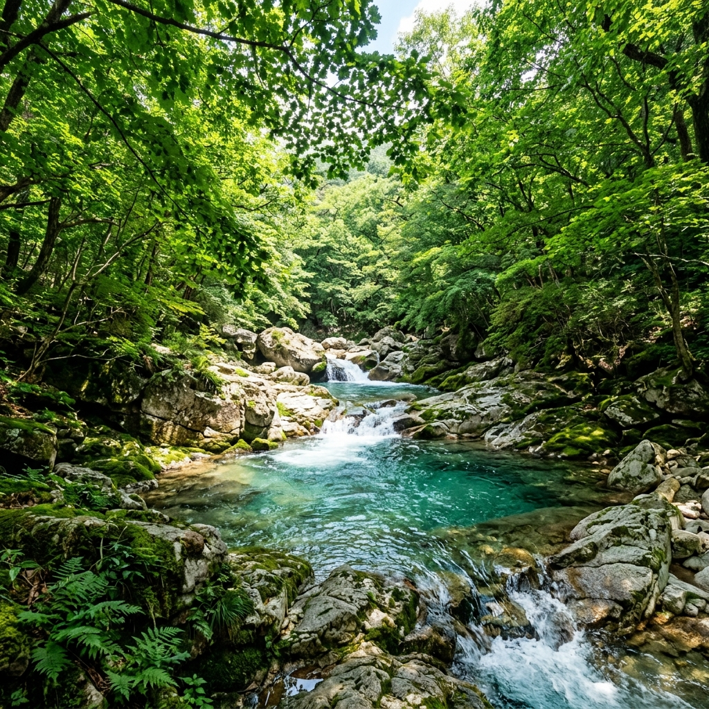
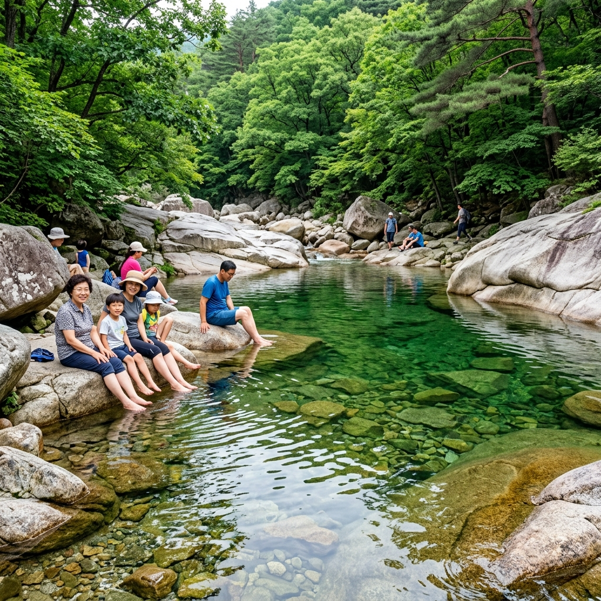
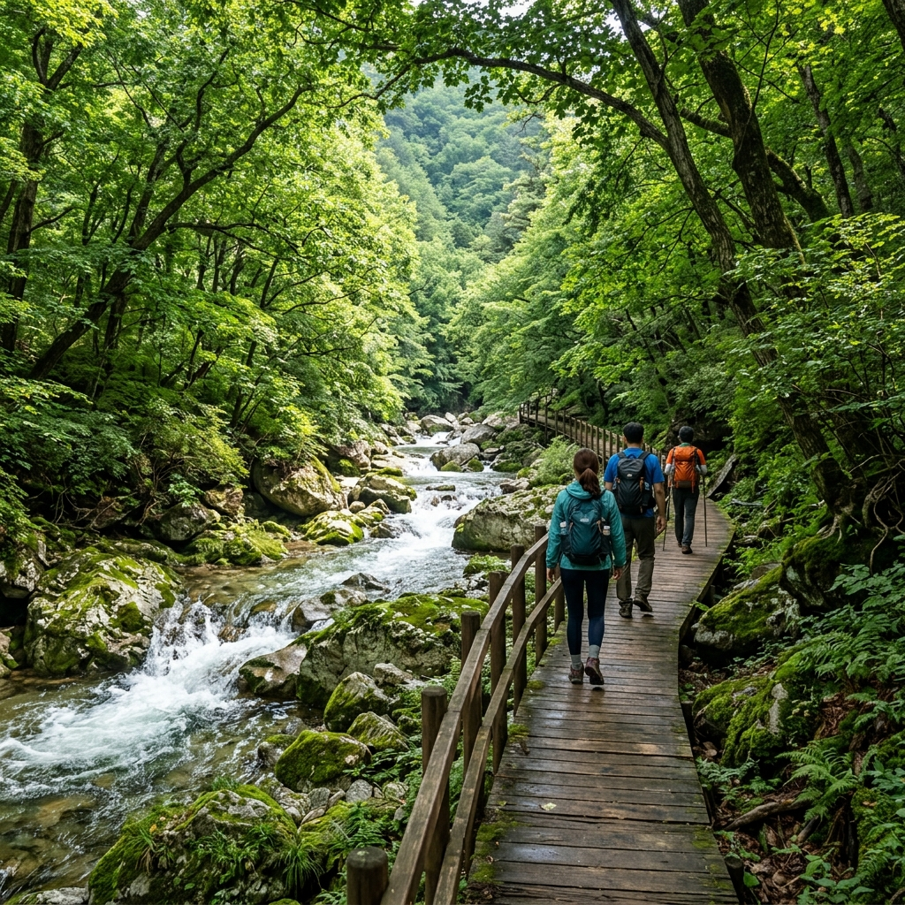

뱀사골 계곡 여름 피서 솔직 후기 — 어디서 내려야 시원한지 직접 걸어봤습니다
✍️ 직접 가보니
7월 초에 뱀사골 탐방로를 와선대에서 제승대 방향으로 걸어봤습니다. 출발 직전까지 더운 날씨가 걱정이었는데, 계곡으로 들어서는 순간 체감온도가 확 떨어졌습니다. 계곡 물이 손을 담그면 10초도 안 돼 시릴 만큼 차갑고, 삼홍소 근처에서 발을 담그고 쉬니 그늘과 물소리만으로도 충분히 더위가 가셨습니다. 병풍소까지는 약 3.2km인데, 험하지 않아 편안하게 걸을 수 있었습니다.
뱀사골 계곡은 어떤 곳인가
지리산국립공원 내 뱀사골 계곡은 전북 남원시 산내면에 위치한 여름 피서지입니다. 탐방로 입구에서 제승대까지 약 4km 구간으로, 계곡을 따라 소(沼)와 폭포가 이어집니다. 지리산 주능선에서 흘러내리는 물길이라 수량이 풍부하고, 계곡물 온도가 여름에도 낮아 물놀이와 트레킹 두 가지를 동시에 즐길 수 있습니다.
이름의 유래는 계곡 형태가 뱀처럼 굽이쳐 흐른다는 설, 또는 예전에 뱀이 많았다는 설이 전해집니다. 지리산국립공원에 속하므로 국립공원 입장료 없이 탐방로를 이용할 수 있습니다(주차 요금 별도).

뱀사골 계곡 — 지리산 깊은 숲을 가로지르는 맑고 차가운 물길
주요 명소 — 와선대부터 제승대까지
| 명소 |
입구~거리 |
특징 |
| 와선대(臥仙臺) |
0.8km |
신선이 누웠다는 너럭바위, 가족 단위 쉼터로 적합 |
| 삼홍소(三紅沼) |
1.6km |
단풍·물·하늘이 붉게 물든다는 소. 여름엔 에메랄드빛 수면 |
| 간장소 |
2.4km |
규모가 작지만 물이 맑아 발 담그기 좋음 |
| 병풍소(屛風沼) |
3.2km |
절벽이 병풍처럼 둘러선 계곡 수영 명당 |
| 제승대(制勝臺) |
4.0km |
의병들의 훈련터로 전해지는 너럭바위 구간 |
계곡 물놀이 가능 구간 — 알고 가면 더 좋은 것
뱀사골 탐방로 중 물놀이가 허용되는 구역은 국립공원 측이 매년 여름 공고합니다. 탐방로 전 구간이 허용되지 않을 수 있으니, 방문 전 지리산국립공원 북부사무소 공식 홈페이지나 국립공원공단 앱에서 당해 연도 물놀이 허용 구역을 확인하는 것이 필수입니다.
일반적으로 와선대와 삼홍소 인근의 얕은 구역에서 발 담그기·물놀이를 즐기는 분들이 많습니다. 계곡 안쪽으로 들어갈수록 수심이 깊어지는 구간이 있으므로 어린이 동반 시 특별히 주의해야 합니다.

삼홍소 — 가을 단풍 때도 유명하지만 여름에는 에메랄드빛 물색이 일품입니다
솔직 장단점 — 다시 간다면 바꿀 것들
좋았던 점:
- 계곡 안으로 들어서는 순간 기온이 체감 5~10도 이상 낮아집니다.
- 탐방로 경사가 완만해 트레킹 초보자도 편하게 걸을 수 있습니다.
- 울창한 수목 덕분에 햇빛이 거의 차단되어 한낮에도 걷기 좋습니다.
아쉬웠던 점:
- 주말·휴일에는 주차장이 금방 찰 수 있어 오전 7시 이전 도착을 권장합니다.
- 왕복 코스라 갔다가 되돌아와야 하므로 체력 배분을 잘 해야 합니다.
- 중간에 편의점이나 식당이 없으므로 간식과 물을 충분히 준비해야 합니다.
교통과 접근 방법
자가용 기준: 서울 → 뱀사골 탐방지원센터 약 3시간 30분~4시간 소요(고속도로 경유 시). 광주·전주에서는 2시간 내외. 내비게이션에 '뱀사골탐방지원센터'로 검색하면 됩니다.
대중교통: 남원 버스터미널에서 반선(뱀사골) 행 농어촌 버스를 이용합니다. 배차 간격이 길어 시간표를 반드시 미리 확인하세요.

뱀사골 탐방로 — 완만한 계곡 옆 숲길이 이어집니다
💡 뱀사골 여름 피서 실전 팁
· 물놀이 허용 구역은 매년 변경되므로 방문 전 공식 앱·홈페이지 확인 필수
· 계곡 안은 시원하지만 탐방로 입구까지는 매우 더울 수 있으니 자외선 차단 필수
· 아쿠아슈즈 또는 물에 젖어도 되는 운동화 착용 권장
· 간식·식수는 입구 마을(반선리)에서 미리 구입 후 탐방
📝 작성자 메모
지리산 계곡을 여럿 다녀봤는데, 뱀사골은 길이 완만하면서도 계곡이 깊고 물이 충분해서 가성비가 높은 피서지였습니다. 가족과 함께라면 와선대~삼홍소(왕복 3.2km)가 딱 적당합니다. 혼자나 커플이라면 병풍소까지 걸어도 충분히 즐겁습니다. 정보 기준일: 2026-07-07. 국립공원 이용 정보는 공단 공식 채널에서 반드시 확인하세요.
#뱀사골계곡
#지리산계곡피서
#여름계곡
#지리산국립공원
#뱀사골물놀이
#삼홍소
#남원여행
#계곡당일치기
#여름피서지
#지리산피서